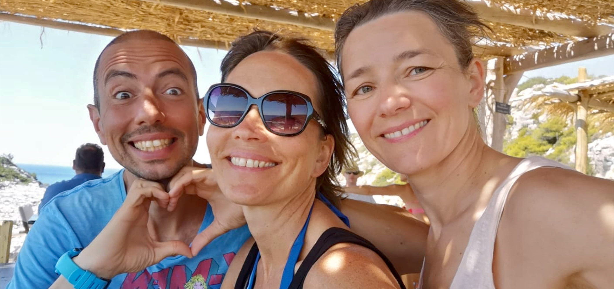

I am an Apnea Academy Freediving Instructor, SHARE & Apnea Academy equalization instructor and
Advanced First Aid Instructor living and teaching (mainly) on the island of Zakynthos in Greece.
I also teach at the Y-40 deep pool in Italy every winter.
Please read below for more on me and my journey.

The state of flow is an idea in positive psychology made popular by Mihály Csíkszentmihályi.
It is similar to what is described as being "in the zone" or "locked in" in sports.
The idea is that we are doing an activity that is difficult enough and where our skills are developed enough to put us in that state.
If our skills are low and the activity is difficult, we would give up. If on the other hand our skills are developed but the activity
is easy, we would be bored.
So we need to find that "sweet spot" where our skills are developed enough and the activity is difficult enough
to put us in that flow state where we are acutely focused on it and it alone.
The thinking is that when we are in this state of flow, we as individuals can kind of disappear and all that is left is a hyper focus
on the activity itself and performing it to the best of our abilities.
There is very little space in the mind for other thoughts and feelings as all our "processing power" is taken up by the activity itself.
Naturally, freediving can lend itself to getting us into a state of flow, if approached properly and not with a focus on numbers and performances.
Our focus needs to be on achieving this state of effortless focus so that we can have graceful peaceful dives and happy feelings when we surface.
So the idea was "freedom through flow activities", which I shortened to "Free Flow".
I was born and raised in Athens, but since my father is from Zakynthos, I have been in the water all my life.
I would follow my dad spearfishing since I was 4 or 5 years old, sometimes being out in the water for hours on end.
So, I've always had a loving and respectful relationship with the sea and felt calm just by getting in the water.
After watching the Big Blue I started being more interested in freediving and would always have my mask, snorkel and fins with me whenever I would go to water.
My studies and work were in web development and I was doing this in Athens until I saw some people freediving.
Turns out it was an Apnea Academy instructor teaching, so we had a chat and I started preparing for my first course.
After completing the course I became friends with Dimitris Koumoulos, who helped me immensely with training and overall guidance, I owe him a lot!
So, I made the decision to drop everything, move to Zakynthos and live in my grandparents home to be able to be close to the water and train to be an instructor.
This happened in 2018 in Tenerife under the guidance of the one and only Umberto Pelizzari (you can find me on AA's list of instructors).
I have also created the Freediving Science" Facebook group which has over 10k users now and is a great place to discuss research, technique etc.
In the fall of 2019 I became a KAD (Kids As Dolhpins) instructor, which is an amazing program with a 30 year experience that teaches freediving to children.
Since 2020, I am also an Advanced First Aid Instructor with Rescue Training International, you can see available courses I can teach and certify in the services section.
Since 2024, I have also become a SHARE Equalization instructor, offering online equalization courses. I am very thankful to Federico Mana for sharing his knowledge on this topic with me!
Since 2025, I am also an equalization instructor with Apnea Academy, trying to further my specialization into the world of freediving equalization!
One of the most common questions new(er) freedivers have is what gear to use, so I thought I'd add my 2 cents here and share what I use.
Mask: Technisub Micromask - this is by far the best mask I've used, very durable,
high quality mask (make sure to get the original and not a clone/copy).
Snorkel: Beuchat Activa Tubair - or any curved soft snorkel like this.
Wetsuits: I work with G & Sea, a Greek wetsuit manufacturer that makes tailored wetsuits using only the finest Yamamoto materials,
send us an email or a message over at our Facebook page to quote you on your suit, you won't regret it.
Fins: I use fins by Deep Dive Xtasy and am very happy with them! I can also offer exclusive pricing on them so hit me up!
Noseclip: Octopus ftw :)
Insurance: DAN Europe is the best dive insurance you can get, click here to get your insurance!